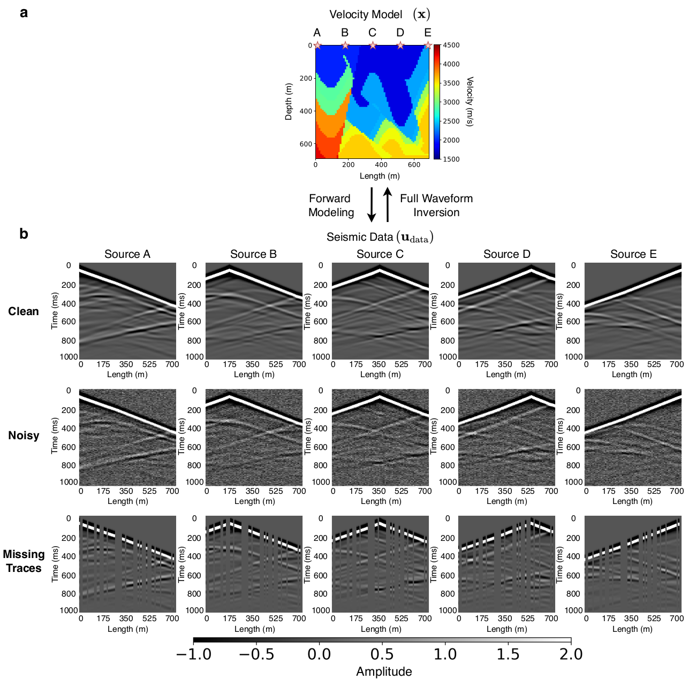
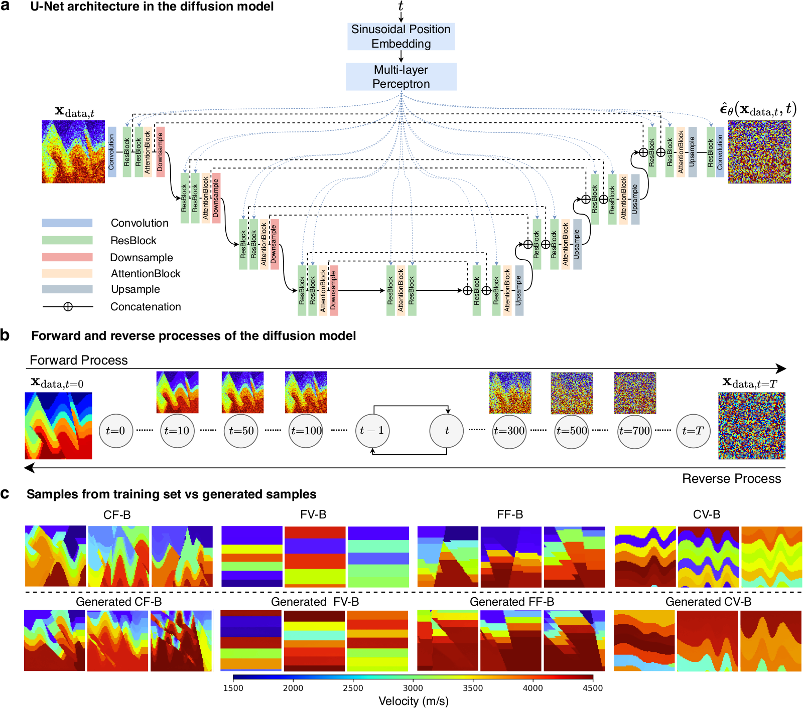
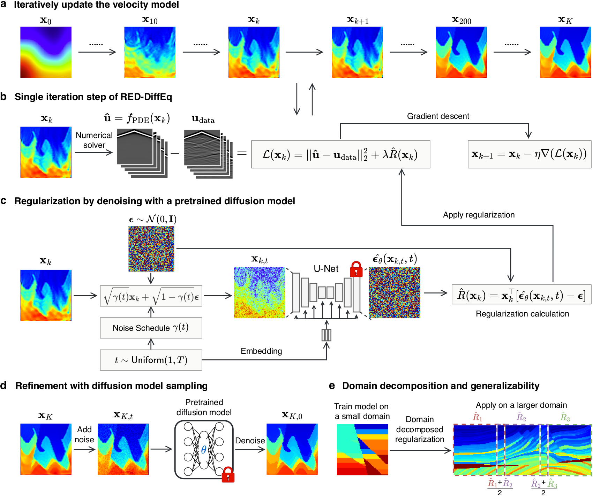
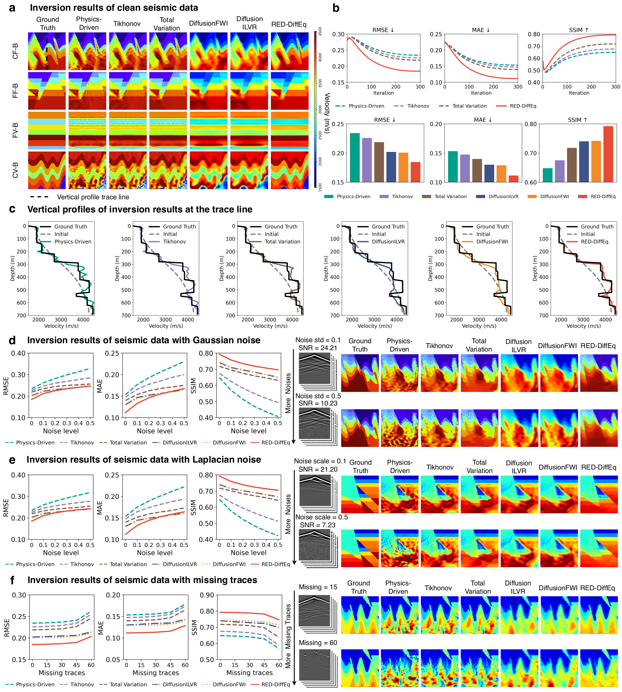
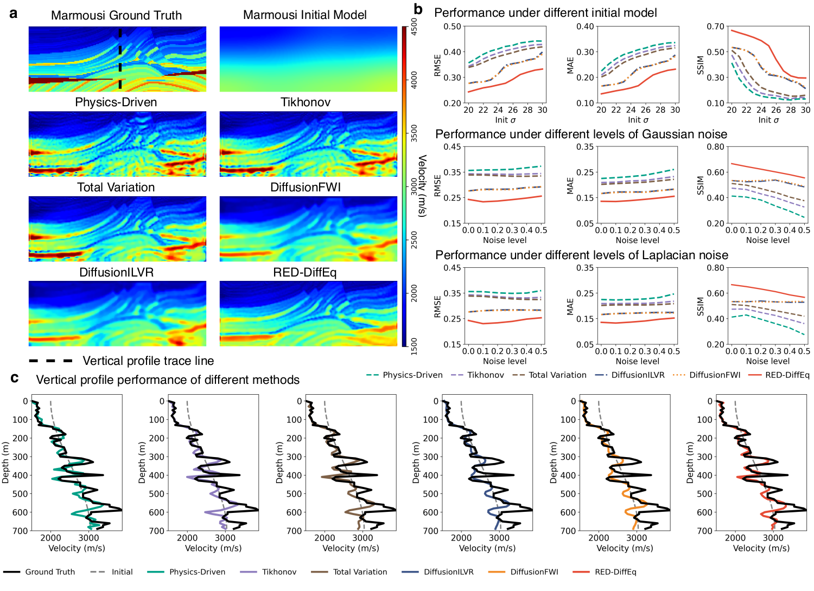
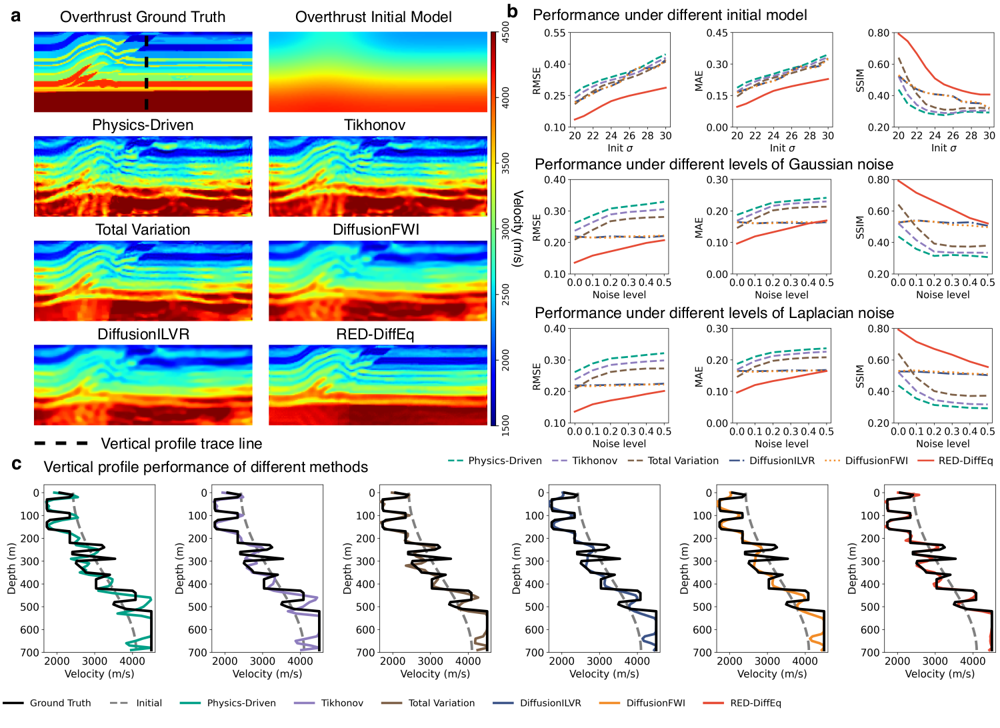
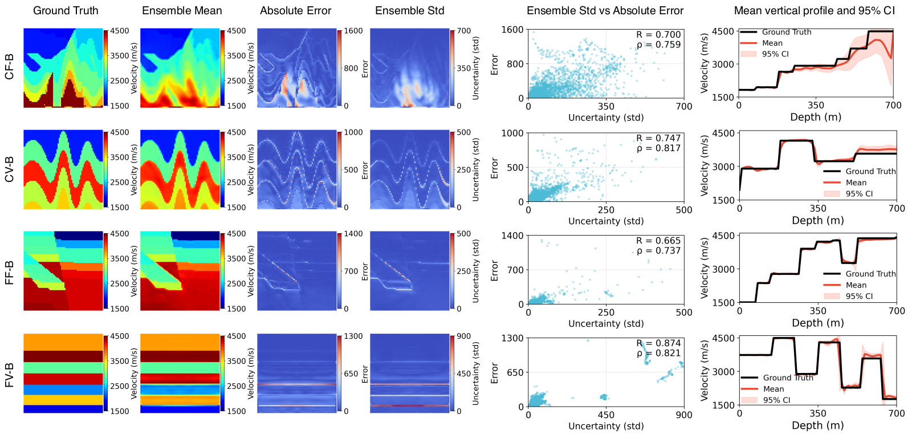

Full-waveform inversion (FWI) is a notoriously ill-posed inverse problem. We replace its hand-crafted regularizer with the gradient of a pretrained diffusion model — a trick borrowed from the Regularization-by-Denoising (RED) literature. The resulting method is plug-and-play, generalizes across geological datasets it was never trained on, and beats TV / Tikhonov baselines on SSIM, MAE and RMSE.
Seismic imaging asks a question that sounds simple and is not: given a few seconds of pressure recorded on the surface of the Earth, what does the subsurface look like? The forward problem — propagating an acoustic wave through a known velocity field — is governed by a linear PDE we understand well. The inverse problem is where things get interesting.
Full-waveform inversion (FWI) is the workhorse method: pose the question as an optimization, minimize the mismatch between observed and simulated seismograms, and let gradient descent find a velocity field that explains the data. In practice the loss surface is non-convex, the data is band-limited, noise is everywhere, and there are infinitely many velocity models that fit the data almost equally well. Without a strong prior on what an Earth model is supposed to look like, FWI happily lands in geologically implausible minima.
01The setup
Let $m \in \mathbb{R}^{H \times W}$ be a 2D velocity model of the subsurface, and $d_{\text{obs}}$ the observed seismic recording. The forward operator $\mathcal{F}$ solves the acoustic wave equation,
and samples the wavefield $u$ at receiver locations to produce a simulated shot record. A handful of sources are fired across the surface; each one produces a shot gather — the raw material FWI has to work with.

FWI then minimizes the data misfit
If equation (2) were the whole story, life would be easy and seismologists would be bored. Two facts make it hard:
- Non-uniqueness. Many wildly different $m$ produce nearly identical $\mathcal{F}(m)$.
- Non-convexity. $\mathcal{L}_{\text{FWI}}$ has many local minima; the optimizer can settle in one that fits the data but looks nothing like rock.
The standard fix is to add a regularizer $R(m)$ that penalizes models we believe are unphysical:
Tikhonov sets $R(m) = \|\nabla m\|_2^2$ (smoothness). Total variation sets $R(m) = \|\nabla m\|_1$ (piecewise-constant blocks with sharp edges). Both encode a single, hand-picked belief about the world. Real geology — folded layers, faults, salt bodies — is more nuanced than either.
02What if the regularizer were a neural network?
The Regularization-by-Denoising (RED) framework, due to Romano, Elad and Milanfar, observes something striking: if you have a good denoiser $D_\sigma$ — a function that maps noisy images to clean ones — you can plug it into an inverse problem as if it were the gradient of a regularizer. Specifically, RED uses the update
which has the lovely interpretation: at each step, nudge the current estimate toward what the denoiser thinks it should look like. The denoiser carries the prior; we don't have to write it down by hand.
What's the best denoiser we have? A score-based diffusion model. Specifically, the score function $\nabla_x \log p_t(x)$ learned during diffusion training is, up to a scaling, exactly a denoiser — Tweedie's formula:
So a diffusion model trained on a corpus of synthetic velocity models gives us $D_\sigma$ for free at every noise level $\sigma$. We train a U-Net to predict the noise added at each diffusion step; running it forward corrupts a velocity model into static, and the learned reverse process turns static back into geology.

So a diffusion model trained on, say, a corpus of synthetic velocity models from OpenFWI gives us $D_\sigma$ at every noise level. RED-DiffEq plugs that into FWI.
The diffusion model never sees seismic data. It only learns what subsurfaces look like — and that turns out to be enough.
03The RED-DiffEq update
Put the pieces together. The RED-DiffEq objective is
with gradient
The first term is the standard FWI gradient — computed by an adjoint-state solve of the wave equation. The second term is a single forward pass through the pretrained diffusion network at a chosen noise level $\sigma_t$. No Langevin sampling, no posterior MCMC, no retraining on seismograms. Just two terms in a gradient and a sensible step size.

04Does it work?
We train the diffusion model on horizontally-layered velocity models from OpenFWI — the simpler geology in the corpus. Then, without any fine-tuning, we deploy that same prior on three test families:
- OpenFWI (in-domain): curved layers, faults, salt bodies.
- Marmousi (out-of-domain): the canonical structurally-complex benchmark.
- Overthrust (out-of-domain): folded thrust geology.
Baselines: physics-driven FWI, FWI + Tikhonov, FWI + total variation, and two diffusion-based competitors — DiffusionFWI and Diffusion-ILVR. Same initial model, same optimizer, same number of iterations. We also push every method through three kinds of data corruption: Gaussian noise, Laplacian noise, and missing traces.

The qualitative picture: FWI alone gets the broad strokes but smears the high-wavenumber detail. Tikhonov over-smooths, blurring out faults. TV introduces blocky cartoon-like reconstructions that look great on synthetics but unphysical on real geology. The diffusion baselines do better but remain sensitive to noise. RED-DiffEq recovers the structural geometry — folded layers, fault offsets — and, crucially, its error curves stay flat as the data degrades: the prior keeps the inversion honest when the measurements are not.
05Why does the cross-dataset transfer work?
This is the most interesting finding. The diffusion model has only ever seen relatively simple layered geology, yet the prior it provides is useful for folded thrust geology. The two out-of-distribution benchmarks make the point sharply.


Our hypothesis: the denoiser doesn’t encode specific geological structures so much as a local statistical signature of what subsurface velocity fields look like — piecewise smooth with sharp velocity contrasts, anisotropic correlation lengths, particular noise statistics. Those local statistics are remarkably consistent across geological families even when the global structure changes dramatically. The RED gradient pushes toward those statistics without ever committing to a specific topology.
Said another way: TV says "the world is piecewise constant." Tikhonov says "the world is smooth." The diffusion prior says "the world looks like this" — and "like this" turns out to be a much richer, structurally-correct claim, even on data it wasn’t trained on.
06Does the prior know when it’s wrong?
A regularizer that improves accuracy is good; one that also tells you where it is uncertain is better. Because RED-DiffEq is cheap to run, we can launch it from many random initializations and treat the resulting spread as an ensemble.

The ensemble standard deviation correlates with the actual reconstruction error: where the method disagrees with itself, it is more likely to be wrong. That makes the spread a usable, calibration-friendly confidence estimate — for free, from the same machinery — and the 95% interval around the velocity-depth profile reliably contains the ground truth.
07Limitations & what’s next
The honest list:
- 2D, acoustic only. Real seismic is 3D and elastic. The math extends; the compute does not.
- Noise level scheduling. Picking $\sigma_t$ remains a knob. A principled annealing schedule would be nice.
- Field data. We benchmark on synthetic data with known ground truth. Real recordings will stress the prior’s tails harder.
What I want to do next: replace the explicit RED gradient with a properly-derived posterior-sampling scheme, port the framework to elastic FWI, and ask whether the same trick — pretrained generative prior, no posterior sampling, plug into an existing PDE-constrained pipeline — works for other inverse problems in scientific computing. Optical tomography and electrical impedance tomography are obvious candidates.
08Cite
09References
- Shan, S., Zhu, M., Lin, Y., & Lu, L. RED-DiffEq: Regularization by denoising diffusion models for solving inverse PDE problems with application to full waveform inversion. arXiv:2509.21659 (2026).
- Romano, Y., Elad, M., & Milanfar, P. The little engine that could: Regularization by denoising (RED). SIAM Journal on Imaging Sciences, 10(4), 2017.
- Ho, J., Jain, A., & Abbeel, P. Denoising diffusion probabilistic models. NeurIPS 2020.
- Deng, C. et al. OpenFWI: Large-scale multi-structural benchmark datasets for full waveform inversion. NeurIPS Datasets & Benchmarks 2022.
- Virieux, J. & Operto, S. An overview of full-waveform inversion in exploration geophysics. Geophysics 74, 2009.